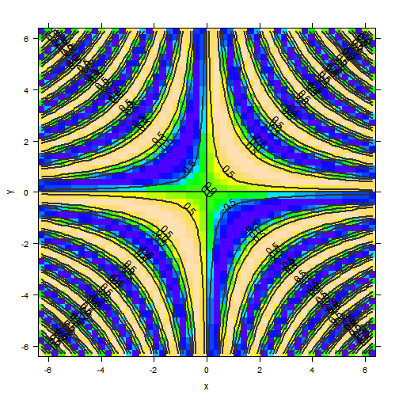
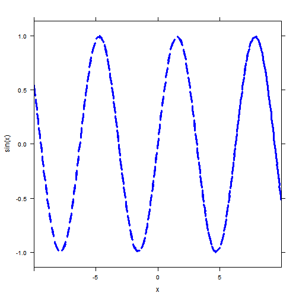

## Warning: the condition has length > 1 and only the first element will be
## used## Attaching package: 'mosaic'
##
## The following objects are masked from 'package:stats':
##
## binom.test, cor, cov, D, fivenum, IQR, median, prop.test, sd, t.test, var
##
## The following object is masked from 'package:base':
##
## max, mean, min, print, prod, range, sample, sumToday we introduced the R Studio mathematical programming environment. Check out the presentation for an overview. If you missed class, you need to find someone to get you up to speed. There was a request for a file containing some of the work we did together in class. Instructions on how to get and use that file follow.
The R Studio server runs on the Linux operating system. Files are organized into directories (the same thing as folders, really). There is a root directory that contains all of the other files and directories on the server. Its name is
/Notice that it is a forward slash and not backward. Your personal work area is under a subdirectory called /home. For example, mine is /home/drosoff. Files in your home directory are private and cannot be read or modified by (most) other users of the system.
We have an area on the server dedicated to files that should be publicly readable. Linux conventions led me to call it /srv/R. The first part is evocative of “server”.
In the Files/Plots/Packages/Help pane, select the Files tab. You see a listing of the contents of your home directory.
Tip: the tilde character
~is a shortcut to your home directory.
In the upper-right corner, there should be a button labeled with an ellipsis (three dots … ). This is the “Go To Folder” button. Click it and enter
/srv/R/MAT_251in the dialog box that appears. Have a look at what you see. Right now, there is just one script available, a file named FirstRScript.R. If you click the filename, it will open in the source pane on the left part of your screen, above the console.
The file will be read-only, because it is located in a directory to which you do not have write permission. To modify this file, you need to make your own copy. This is easy to do.
~/FirstRScript.R. The ~ is interpreted by R as the path to your home directory.
~.
Since you have full permissions in your own home directory, you can modify the new file however you like.
WARNING. If you accidentally delete something, it’s gone forever. No one has the power to get it back. Be very careful about file deletion.
Read all of the lines in the script. Notice how even the code lines sometimes have comments explaining what they will do when they are executed. It’s a good habit to comment your code as you write it.
Remember, you can always get a fresh copy of this script. So feel free to play with it and experiment. Use the Help interface to learn more about the available commands and their options. You really can’t hurt anything by playing around, with the exception of deleting your own files and directories.
mosaic packageThe script we’ve been working with requires an R package called mosaic. The first line of the script (that isn’t a comment) makes sure this package is loaded. Otherwise, the commands makeFun() and plotFun() won’t make sense to R and it will complain.
To use these commands in later sessions, you will have to make sure the package is loaded. This is accomplished via the Packages tab in the lower right pane. Scroll down until you find mosaic and check its box. This setting should persist across sessions, but if familiar commands begin to throw errors, this may be the culprit.
plotFun(sin(x * y) ~ x & y, xlim = c(-2 * pi, 2 * pi), ylim = c(-2 * pi, 2 *
pi), nlevel = 20)
plotFun(sin(x) ~ x, groups = cut(x, findZeros(sin(x) ~ x, within = 10)$x), col = c("blue",
"green"), lty = 2, lwd = 3, xlim = c(-10, 10))## Warning: 'x' is NULL so the result will be NULL